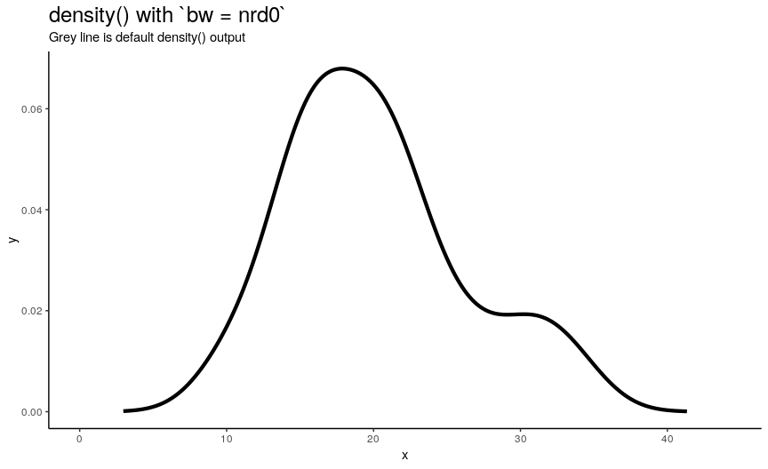
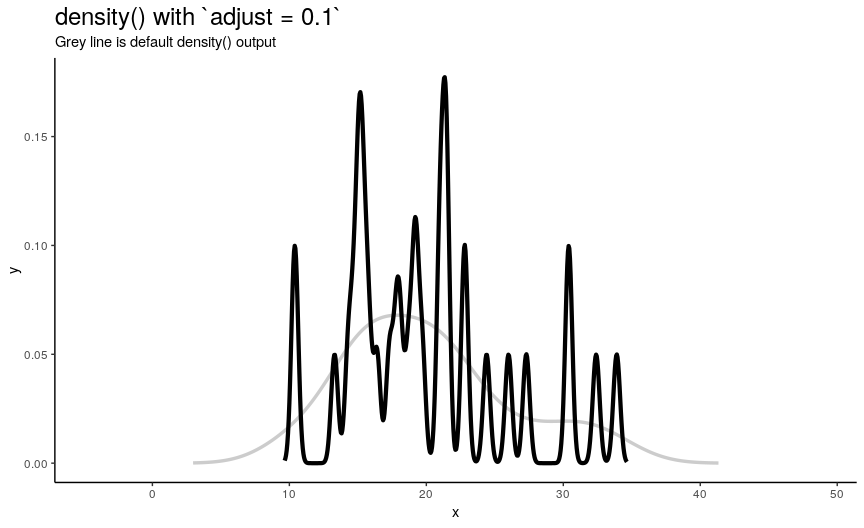
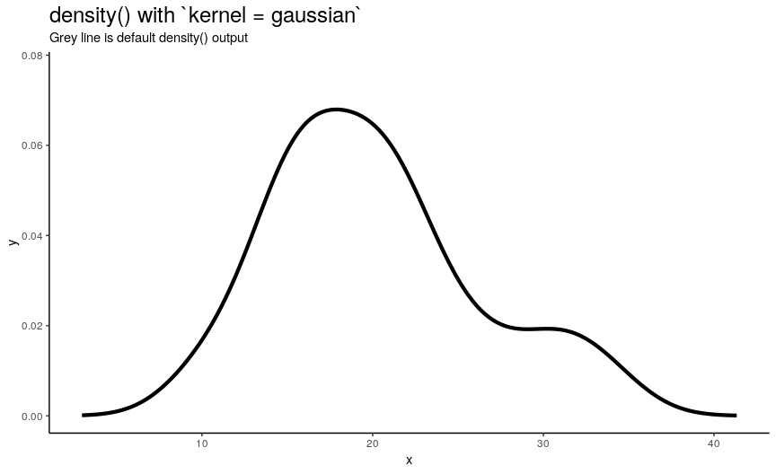
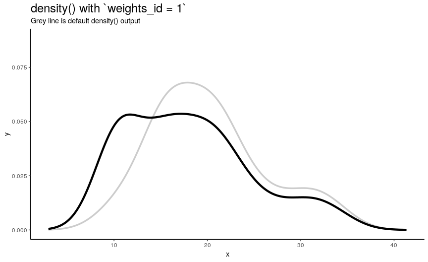
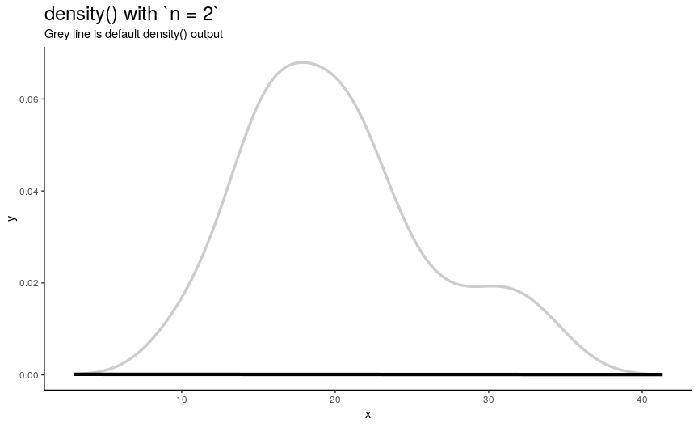
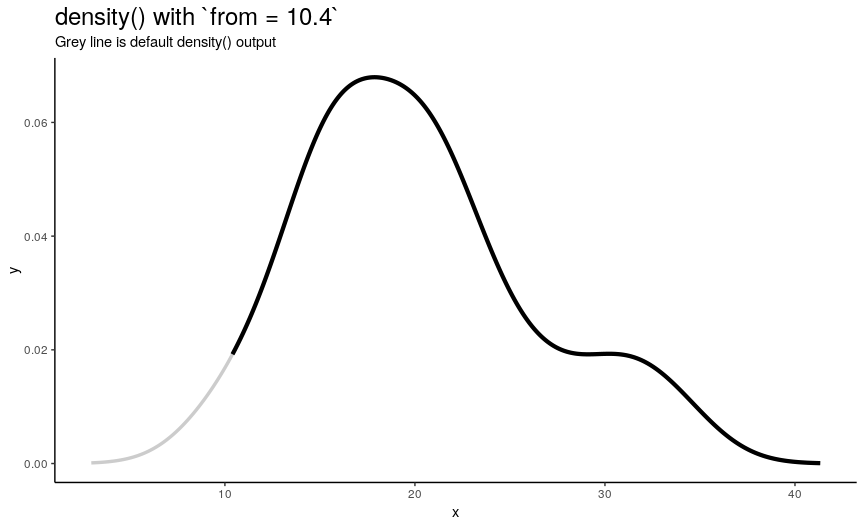
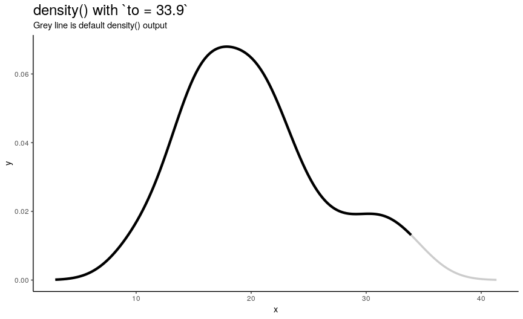
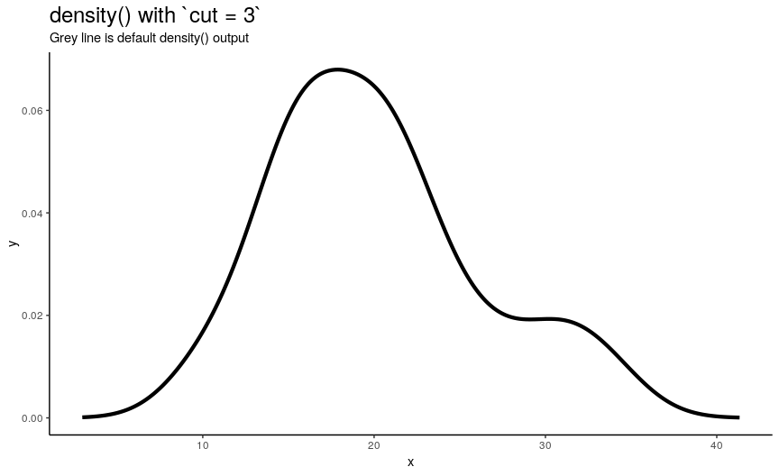

Arguments of stats::density()
stats::density()
Prologue
In R, one of the “go to” functions for kernel density estimation is density() from base R package ‘stats’. Given numeric sample, it returns a set of x-y pairs on estimated density curve. It is also a main “workhorse” for estimating continuous distributions in my ‘pdqr’ package.
However, output of density() highly depends on values of its arguments. Some of them define kernel density estimation algorithm, and the others are responsible for different properties of output set of x-y pairs.
In this post I illustrate with animations how changing arguments of density() changes the output.
Overview
The illustration workflow will be as follows:
- For a certain
density()argument create a set of its values that will help to illustrate how it affects the output. - For every value
aof argumentxcomputedensity(mtcars$mpg, x = a)(all other arguments having default values). This results into a set of “density curves”: piecewise-linear curves drawn through x-y points. - Animate evolution of density curves as argument value changes from first to last.
We’ll need the following setup (including main helper function density_anim() for creating animations):
library(tidyverse, warn.conflicts = FALSE)
library(gganimate)
library(rlang, warn.conflicts = FALSE)
# Create refernce default `density()` curve
default_density_curve <- as_tibble(density(mtcars$mpg)[c("x", "y")])
# Helper function to create density animation. Here `...` should be a vector
# of argument values of interest (passed as that argument), and `duration` is a
# total duration of animation in seconds.
density_anim <- function(..., duration = 10) {
density_mpg <- function(...) {
as_tibble(density(mtcars$mpg, ...)[c("x", "y")])
}
# `...` should consist only from one input
dots <- list(...)
arg_name <- names(dots)[1]
vals <- dots[[1]]
# Take into account that input might be a list (and thus not suitable for
# `transition_states()`)
if (is.list(vals)) {
arg <- paste0(arg_name, "_id")
states <- seq_along(vals)
} else {
arg <- arg_name
states <- vals
}
# Convert to factor to preserve order of argument values in animation
states <- factor(states, levels = unique(states))
anim <- tibble(!!sym(arg) := states) %>%
# Create points on density curves
mutate(den_points = pmap(dots, density_mpg)) %>%
unnest(den_points) %>%
# Define animation
ggplot(aes(x, y, group = !!sym(arg))) +
# Default curve for reference
geom_line(
data = default_density_curve,
mapping = aes(x, y), inherit.aes = FALSE,
color = "grey80", size = 1.2
) +
# Main curves for different argument values
geom_line(size = 1.5) +
transition_states(!!sym(arg)) +
ggtitle(
label = "density() with `{arg} = {previous_state}`",
subtitle = "Grey line is default density() output"
) +
theme_classic() +
theme(plot.title = element_text(size = 18))
animate(anim, duration = duration, fps = 12, start_pause = 6, end_pause = 6)
}Estimation parameters
Arguments that define kernel density estimation procedure are: bw, adjust, kernel, and weights. There are also window and width, but they seem to be present only for backward compatibility and shouldn’t be used directly.
Bandwidth bw
Argument bw is responsible for computing bandwith of kernel density estimation: one of the main parameters that greatly affect the output. It can be specified as either algorithm of computation or directly as number. Because actual bandwidth is computed as adjust*bw (adjust is another density() argument, which is explored in the next section), here we will see how different algorithms compute bandwidths, and the effect of changing numeric value of bandwidth will be shown in section about adjust.
There are 5 available algorithms: “nrd0”, “nrd”, “ucv”, “bcv”, “SJ”. Here is an animation of their effect:
density_anim(bw = c("nrd0", "nrd", "ucv", "bcv", "SJ"), duration = 5)
As you can see, density curve changes, but not drastically. At least the whole shape seems to be somewhat preserved.
Adjusting bandwidth adjust
To easily “specify values like ‘half the default’ bandwidth”, there is an argument adjust. Bigger values indicate greater bandwidth that is actually used. Zero results into zero bandwidth (so never should be used), one (default) - into originally computed by chosen algorithm.
density_anim(adjust = seq(0.1, 2, by = 0.05))
Changing adjust leads to very noticeable changes in output shape of density curve: bigger values give smoother curves.
Kernel type kernel
Argument kernel defines the shape of kernel which will be used. There are 7 possible kernels in total which are shown in the following animation:
density_anim(
kernel = c("gaussian", "epanechnikov", "rectangular", "triangular",
"biweight", "cosine", "optcosine"),
duration = 7
)
Choice of kernel function also considerably affects the output shape of density curve, but not as greatly as adjust. Most notable difference from default “gaussian” kernel is with “rectangular” kernel: result, unsurprisingly, is “more rectangular”.
Observation importance weights
Argument weights should be used if some observations are considered to be “more important” and are “more reference” than the other ones. It should be a numeric vector with the same length as input sample x. Note that for output to be a true density plot, sum of weights should be 1.
To illustrate its effect, lets construct a sequence of weights each of which makes one observation having 10 times more weight than any other (that contribute equally). Order of those observations we will choose so that they progress from the smallest to the biggest.
weights_list <- lapply(order(mtcars$mpg), function(i) {
res <- c(rep(1, times = i-1), 10, rep(1, times = length(mtcars$mpg)-i))
res / sum(res)
})
density_anim(weights = weights_list)
As expected from weights_list construction, one can see a “spike” that “travels” from left to right, indicating the position of “most important” observation.
Output value parameters
Arguments that define structure of output are: n, from, to, and cut. There are also give.Rkern (can be used to return computed “canonical bandwidth”) and na.rm (whether to remove NA values from input), which are not particularly useful in showing the nature of density() output.
Number of points n
n is responsible for number of returned x-y points. They are equally spaced on the specified range (see next sections). Default value is 512 (taken as a power of two for performance reasons of fft()), but to illustrate its effect on output lets use sequence from 2 to 50.
density_anim(n = 2:50)
As you can see, in this case values higher than 40 already give considerably small errors (compared to “true curve” when n is infinity). However, if the underlying curve isn’t that smooth (for example, in case of low adjust) it is a good idea to use more points with default 512 being enough for most practical situations.
Left edge from
If specified, from defines a left edge of sequence of “x” points, at which density curve is evaluated. For illustration, lets use sequence from minimum to maximum values of mtcars$mpg.
from_vec <- seq(from = min(mtcars$mpg), to = max(mtcars$mpg), length.out = 20)
density_anim(from = round(from_vec, digits = 1))
Note that when from is equal to the smallest value of input numeric vector, it is still greater than left edge of default density curve. For explanation of this “extending property” of default curve, see section about cut.
Right edge to
Argument to has the same nature as from, but defines right edge of points.
to_vec <- rev(from_vec)
density_anim(to = round(to_vec, digits = 1))
Note again, that value of to equal to maximum of input numeric vector is not enough to see the default behavior.
Range extension cut
By default, sequence of n x-y points is computed as follows:
- Equally spaced grid of
n“x” points is computed betweenfromandtowhich by default are computed as being “cut*bwoutside ofrange(x)”. In other words, default range is extended to left and right ofrange(x)by the amount of “canonical bandwidth” (computed bybwalgorithm) multiplied by argumentcut(default being 3). - “Y” points are taken from “true curve” of kernel density estimate.
density_anim(cut = seq(3, 0, by = -0.2))
When cut changes from 3 to 0, range of computed points shrinks from default one to range of input numeric vector. Default call to density() computes set of points outside of original range. I call this behavior an “extending property” of density(). Note that cut can also be negative, which means reduced input range.
So by default, density() extends range of input vector. The problem is that it can contradict natural constraints on input. For example, what if you want to estimate density for probability distribution of value that can only be positive? Dealing with boundary values during kernel density estimation is an important topic and it is called a boundary correction problem. One of possible solutions is to use form_resupport() function from ‘pdqr’ package.
Epilogue
density()provides reach possibilities for doing kernel density estimation, which should be carefully studied to use them wisely.- Using ‘gganimate’ for creating animated illustrations is fun.
## R version 3.6.1 (2019-07-05)
## Platform: x86_64-pc-linux-gnu (64-bit)
## Running under: Ubuntu 18.04.2 LTS
##
## Matrix products: default
## BLAS: /usr/lib/x86_64-linux-gnu/openblas/libblas.so.3
## LAPACK: /usr/lib/x86_64-linux-gnu/libopenblasp-r0.2.20.so
##
## locale:
## [1] LC_CTYPE=ru_UA.UTF-8 LC_NUMERIC=C
## [3] LC_TIME=ru_UA.UTF-8 LC_COLLATE=ru_UA.UTF-8
## [5] LC_MONETARY=ru_UA.UTF-8 LC_MESSAGES=ru_UA.UTF-8
## [7] LC_PAPER=ru_UA.UTF-8 LC_NAME=C
## [9] LC_ADDRESS=C LC_TELEPHONE=C
## [11] LC_MEASUREMENT=ru_UA.UTF-8 LC_IDENTIFICATION=C
##
## attached base packages:
## [1] stats graphics grDevices utils datasets methods base
##
## other attached packages:
## [1] rlang_0.3.4 gganimate_1.0.3 forcats_0.4.0 stringr_1.4.0
## [5] dplyr_0.8.1 purrr_0.3.2 readr_1.3.1 tidyr_0.8.3
## [9] tibble_2.1.3 ggplot2_3.1.1 tidyverse_1.2.1
##
## loaded via a namespace (and not attached):
## [1] Rcpp_1.0.1 lubridate_1.7.4 lattice_0.20-38
## [4] prettyunits_1.0.2 png_0.1-7 class_7.3-15
## [7] assertthat_0.2.1 digest_0.6.19 R6_2.4.0
## [10] cellranger_1.1.0 plyr_1.8.4 backports_1.1.4
## [13] evaluate_0.14 e1071_1.7-2 httr_1.4.0
## [16] blogdown_0.12 pillar_1.4.1 progress_1.2.2
## [19] lazyeval_0.2.2 readxl_1.3.1 rstudioapi_0.10
## [22] gifski_0.8.6 rmarkdown_1.13 labeling_0.3
## [25] munsell_0.5.0 broom_0.5.2 compiler_3.6.1
## [28] modelr_0.1.4 xfun_0.7 pkgconfig_2.0.2
## [31] htmltools_0.3.6 tidyselect_0.2.5 lpSolve_5.6.13.2
## [34] bookdown_0.11 codetools_0.2-16 crayon_1.3.4
## [37] withr_2.1.2 sf_0.7-7 grid_3.6.1
## [40] nlme_3.1-140 jsonlite_1.6 gtable_0.3.0
## [43] DBI_1.0.0 magrittr_1.5 units_0.6-3
## [46] scales_1.0.0 KernSmooth_2.23-15 cli_1.1.0
## [49] stringi_1.4.3 farver_1.1.0 xml2_1.2.0
## [52] generics_0.0.2 transformr_0.1.1 tools_3.6.1
## [55] glue_1.3.1 tweenr_1.0.1 hms_0.4.2
## [58] yaml_2.2.0 colorspace_1.4-1 classInt_0.3-3
## [61] rvest_0.3.4 knitr_1.23 haven_2.1.0